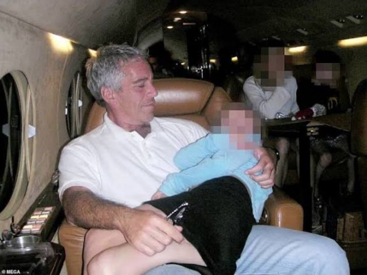
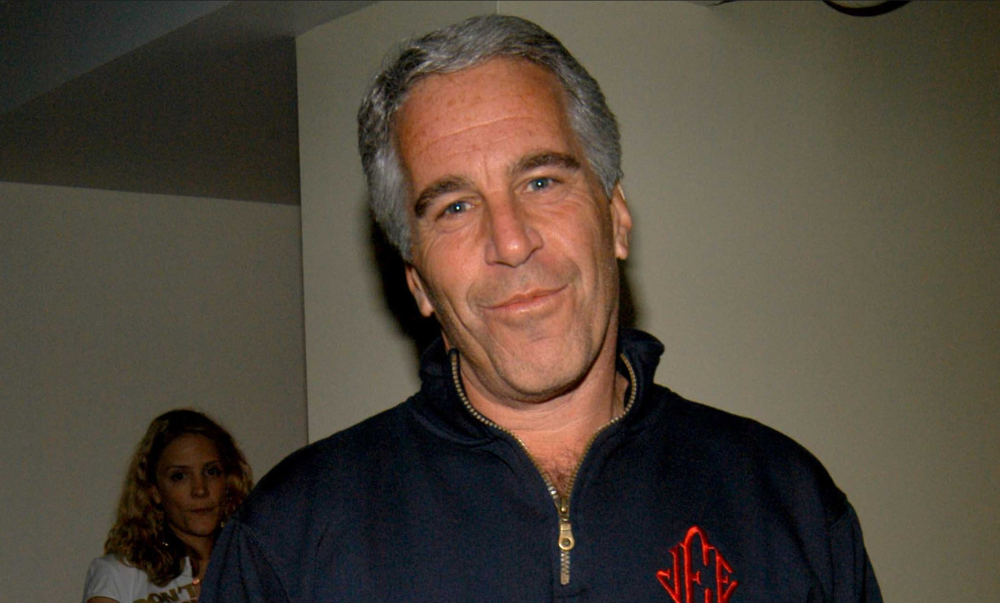

Jeffrey Edward Epstein lahir dan dibesarkan di New York. Pada pertengahan 1970-an, ia sempat bekerja sebagai guru matematika dan fisika di Dalton School, sekolah swasta elite di Manhattan, meski tidak pernah menyelesaikan pendidikan universitasnya di bidang tersebut. Dari lingkungan inilah Epstein mulai membangun relasi dengan keluarga-keluarga kaya dan berpengaruh, yang kemudian membuka jalannya ke dunia keuangan. Karier Epstein melonjak setelah ia direkrut ke Bear Stearns, salah satu bank investasi besar di Wall Street. Dalam waktu relatif singkat, ia berhasil menjadi mitra di perusahaan tersebut sebelum akhirnya mendirikan firma sendiri, J. Epstein & Co., pada 1982. Perusahaan ini dikenal sangat tertutup dan hanya melayani klien terbatas, namun diklaim mengelola aset bernilai lebih dari 1 miliar dolar AS. 3
Masalah hukum Epstein mulai mencuat pada 2005, ketika keluarga seorang gadis berusia 14 tahun melapor ke polisi Florida atas dugaan pelecehan seksual. Investigasi mengungkap adanya pola korban yang berulang dan kesaksian yang konsisten. Meski demikian, pada 2008 jaksa federal mencapai kesepakatan hukum dengan Epstein yang memungkinkan dirinya terhindar dari dakwaan federal berat. Ia hanya dijatuhi hukuman 18 bulan penjara di tingkat negara bagian Florida, dengan fasilitas work release yang memberinya kebebasan keluar penjara selama jam kerja. Kesepakatan ini menuai kritik luas dan kemudian dijuluki media sebagai "kesepakatan abad ini". Pada 6 Juli 2019, Epstein kembali ditangkap di New York atas dakwaan perdagangan seks terhadap anak di bawah umur dan menjalankan jaringan eksploitasi seksual. Ia membantah seluruh tuduhan dan mengaku tidak bersalah.
| No | Nama |
|---|---|
| 1 | Donald Trump |
| 2 | Bill Gates |
| 3 | Bill Clinton |